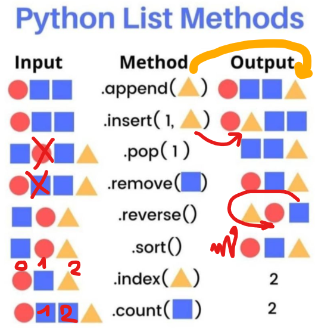

Fecha: 28-abr-2025
Modalidad: Virtual
Herramienta: Python Online
➡️ Abrir Editor Online Online Python
➡️ Abrir Editor Online Programiz Python Online Compiler
<
Una lista es una colección ordenada y modificable de elementos en Python. Permite almacenar datos heterogéneos (int, str, float, etc.).
inventario = ["tornillos", "tuercas", "engranajes"]
inventario.append("correas")
inventario.remove("tuercas")
print(inventario[0]) # tornillos
if "correas" in inventario:
print("Correas en inventario.")
print(len(inventario))
Cada elemento de una lista tiene un índice que empieza en 0:
| Elemento | Índice positivo | Índice negativo |
|---|---|---|
| "tornillos" | 0 | -3 |
| "tuercas" | 1 | -2 |
| "engranajes" | 2 | -1 |
Python permite usar índices negativos para acceder desde el final de la lista. El índice -1 representa el último elemento, -2 el penúltimo, y así sucesivamente.
productos = ["motor", "válvula", "sensor"]
print(productos[-1]) # sensor
print(productos[-2]) # válvula
Es una técnica para obtener una porción de una lista (una "sublista"). Se utiliza la sintaxis [inicio:fin]. El índice de fin no se incluye.
inventario = ["motor", "válvula", "sensor", "bomba"]
print(inventario[1:3]) # ['válvula', 'sensor']
print(inventario[:2]) # ['motor', 'válvula']
print(inventario[2:]) # ['sensor', 'bomba']
print(inventario[::2]) # ['motor', 'sensor']
Las cadenas (str) en Python se pueden tratar como listas de caracteres.
nombre = "logística"
print(nombre[0]) # l
print(nombre[2:6]) # gíst
Crear un inventario en Online Python.
Problema:
inventario = ["tornillos", "tuercas", "engranajes", "rodamientos", "mangueras"]
print("Inventario inicial:", inventario)
inventario.append("correas")
inventario.remove("mangueras")
print("Inventario actualizado:", inventario)
Guardar y compartir link.
Gestionar eficiencias semanales de máquinas.
Problema:
eficiencias = [85, 78, 90, 88, 76, 92]
promedio = sum(eficiencias) / len(eficiencias)
print("Promedio de eficiencia:", promedio)
maquinas_altas = 0
for eficiencia in eficiencias:
if eficiencia > 80:
maquinas_altas += 1
print("Máquinas con eficiencia > 80%:", maquinas_altas)
Subir el link y subir a Moodle.
▶️ Ver video - Listas en Python para Principiantes (español)